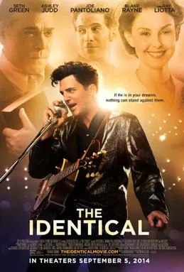

The genetics
The film is a parable of identical twins separated at birth, and although no genetics is discussed or tested, its premise answers the nature versus nurture question in favour of nature. Ryan is raised by a devout preacher who believes the boy is called by God to the ministry, yet the same music that made his brother a star keeps breaking out of him, and he ends up singing, moving and looking like the twin he has never met. His upbringing gives him piety and good manners, but not his vocation, which the film presents as written into him from birth. Critics panned the film as solemn and cliché-ridden. Real studies of identical twins reared apart do report surprising shared interests and talents, but also substantial differences, and no gene dictates a career as a rock and roll singer.
The story
During the Great Depression in Alabama, William and Helen Hemsley have identical twin boys and, judging that they can afford to keep only one, give the other away. The son they keep, Drexel Hemsley, grows up to become 'The Dream', an Elvis-like rock and roll idol of the 1950s. The other, raised in Tennessee as Ryan Wade by the evangelist Reece Wade and his wife Louise, is expected to become a preacher, but every time rock and roll plays he is irresistibly drawn to it. After working as a mechanic, he begins performing Drexel's songs on the fair circuit and then in sold-out venues, encouraged by his friend Dino, his wife Jenny and his employer Avi, while struggling to reconcile his career with his father's hopes. Eventually he discovers that the star he imitates is his long-lost twin brother.